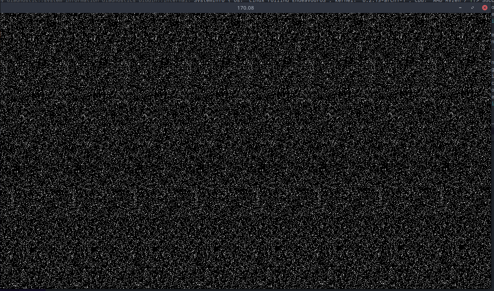

Bevy Game of Life Shader Example Part 2
Now that we have our pipeline descriptors setup, its time to build the bind group.
A
BindGroupis a collection of resources such as buffers, textures, and samplers that are bound together and made available to shaders during rendering. Bind groups are created by the application and then bound to a specific pipeline layout, which defines the expected bindings for the resources in the group.
At the bottom of our pipeline.rs file, lets add the system which will create our bindgroup each render instance.
...
#[derive(Resource)]
struct GameOfLifeImageBindGroup(pub BindGroup);
pub fn queue_bind_group(
mut commands: Commands,
render_device: Res<RenderDevice>,
pipeline: Res<GameOfLifePipeline>,
gpu_images: Res<RenderAssets<Image>>,
game_of_life_image: Res<GameOfLifeImage>,
) {
let view = &gpu_images[&game_of_life_image.0];
}Starting off we pull in RenderDevice which is used to create all wgpu resources. RenderAssets<Image> is a resource holding all the GPU representations
of RenderAssets as long as they exist. We use the handle from the image we created as our canvas, to get the GpuImage. Now the bind group:
...
let bind_group = render_device.create_bind_group(&BindGroupDescriptor {
label: Some("Game of Life Bind Group"),
layout: &pipeline.texture_bind_group_layout,
entries: &[BindGroupEntry {
binding: 0,
resource: BindingResource::TextureView(&view.texture_view),
}],
});
commands.insert_resource(GameOfLifeImageBindGroup(bind_group));Well this looks really familiar! It is an exact replica of the bind_group_layout we created earlier. The only difference is that we are now adding the actual resources that the layout expects. In this case we are adding the texture view of our canvas image. Lets add the system to our render app.
...
let render_app = app.sub_app_mut(RenderApp);
render_app
.init_resource::<GameOfLifePipeline>()
.add_system(pipeline::queue_bind_group.in_set(RenderSet::Queue));We add our system to the set RenderSet::Queue which create BindGroups that depend on Prepare data and queue up draw calls to run during the Render step.
If you try running the app, it will currently crash with the following error:
Resource requested by game_of_life_sim::pipeline::queue_bind_group does not exist: game_of_life_sim::image::GameOfLifeImage
Oops! We forgot to tell bevy render world how to access our Image which exist on the main world. Let's add the ExtractResourcePlugin which just
extracts the resources into the "render world".
app.add_plugin(FrameTimeDiagnosticsPlugin::default())
// Extract the game of life image resource from the main world into the render world
// for operation on by the compute shader and display on the sprite.
.add_plugin(ExtractResourcePlugin::<GameOfLifeImage>::default())
...If you run again, no errors! Awesome :D. Now onto nodes and the render graph. This was new to me after I setup wgpu manually in my other projects. If you are curious,
this is the docstring attached to the RenderGraph resource:
The
RenderGraphconfigures the modular, parallel and re-usable render logic. It is a retained and stateless (nodes themselves may have their own internal state) structure, which can not be modified while it is executed by the graph runner. TheRenderGraphRunneris responsible for executing the entire graph each frame. It consists of three main components: Nodes, Edges and Slots.Nodesare responsible for generating draw calls and operating on input and output slots.Edgesspecify the order of execution for nodes and connect input and output slots together.Slotsdescribe the render resources created or used by the nodes. Additionally a render graph can contain multiple sub graphs, which are run by the corresponding nodes. Every render graph can have its own optional input node.
Essentially we setup a graph to tell the render world how to run our pipelines. We only have a single pipeline currently, so we will only need a single node.
Our node will have a state for processing which stage the shader is currently in: Loading, Init, Update. Back in pipeline.rs lets add our node:
...
pub enum GameOfLifeState {
Loading,
Init,
Update,
}
pub struct GameOfLifeNode {
state: GameOfLifeState,
}
impl Default for GameOfLifeNode {
fn default() -> Self {
Self {
state: GameOfLifeState::Loading,
}
}
}Lets add the node to our render app:
let render_app = app.sub_app_mut(RenderApp);
render_app
.init_resource::<GameOfLifePipeline>()
.add_system(pipeline::queue_bind_group.in_set(RenderSet::Queue));
let mut render_graph = render_app.world.resource_mut::<RenderGraph>();
render_graph.add_node("game_of_life", GameOfLifeNode::default());
render_graph.add_node_edge(
"game_of_life",
bevy::render::main_graph::node::CAMERA_DRIVER,
);We add the node to the render graph and then add an edge to the camera driver. This will tell the render graph to run our node before the camera driver.
Our node starts in the Loading state. We now have to impl bevy's render_graph::Node: The trait is defined as follow:
pub trait Node: Downcast + Send + Sync + 'static {
/// Specifies the required input slots for this node.
/// They will then be available during the run method inside the [`RenderGraphContext`].
fn input(&self) -> Vec<SlotInfo> {
Vec::new()
}
/// Specifies the produced output slots for this node.
/// They can then be passed one inside [`RenderGraphContext`] during the run method.
fn output(&self) -> Vec<SlotInfo> {
Vec::new()
}
/// Updates internal node state using the current render [`World`] prior to the run method.
fn update(&mut self, _world: &mut World) {}
/// Runs the graph node logic, issues draw calls, updates the output slots and
/// optionally queues up subgraphs for execution. The graph data, input and output values are
/// passed via the [`RenderGraphContext`].
fn run(
&self,
graph: &mut RenderGraphContext,
render_context: &mut RenderContext,
world: &World,
) -> Result<(), NodeRunError>;
}The input defines required input slots and output defines produced output slots. This will exist on the RenderGraphContext. Our example doesn't
use either, so we don't care for the graph context.
impl render_graph::Node for GameOfLifeNode {
fn update(&mut self, world: &mut World) {
let pipeline = world.resource::<GameOfLifePipeline>();
let pipeline_cache = world.resource::<PipelineCache>();
// if the corresponding pipeline has loaded, transition to the next stage
match self.state {
GameOfLifeState::Loading => {
if let CachedPipelineState::Ok(_) =
pipeline_cache.get_compute_pipeline_state(pipeline.init_pipeline)
{
self.state = GameOfLifeState::Init;
}
}
GameOfLifeState::Init => {
if let CachedPipelineState::Ok(_) =
pipeline_cache.get_compute_pipeline_state(pipeline.update_pipeline)
{
self.state = GameOfLifeState::Update;
}
}
GameOfLifeState::Update => {}
}
}
fn run(
&self,
_graph: &mut render_graph::RenderGraphContext,
render_context: &mut RenderContext,
world: &World,
) -> Result<(), render_graph::NodeRunError> {
Ok(())
}
}Lets focus on the update method. We are checking if the pipeline has loaded. If it has, we transition to the next stage. For update,
we have no other state to transition to, but if you needed to recreate your pipeline or rerun your init pipeline, you would do change the state here.
The fun stuff: run. This is where we will be running our compute shaders. Let's setup the init pipeline first:
fn run(
&self,
_graph: &mut render_graph::RenderGraphContext,
render_context: &mut RenderContext,
world: &World,
) -> Result<(), render_graph::NodeRunError> {
let texture_bind_group = &world.resource::<GameOfLifeImageBindGroup>().0;
let pipeline_cache = world.resource::<PipelineCache>();
let pipeline = world.resource::<GameOfLifePipeline>();
...We have to pull 3 resources from the world: GameOfLifeImageBindGroup, PipelineCache, and GameOfLifePipeline. We are already familiar
with the pipeline and pipeline cache, but the new resource GameOfLifeImageBindGroup is a BindGroup that we queue each frame to be used by the shader.
Now we begin the ComputePass.
...
let mut pass = render_context
.command_encoder()
.begin_compute_pass(&ComputePassDescriptor::default());
...Since we are only using compute shaders, we need to begin a compute pass, the other side of the coin is a render pass for vertex and fragment shaders.
...
pass.set_bind_group(0, texture_bind_group, &[]);
...Assign our bindgroup the the compute pass. Then we pull the state defined from our node to see which piplline to execute.
// select the pipeline based on the current state
match self.state {
GameOfLifeState::Update | GameOfLifeState::Loading => {}
GameOfLifeState::Init => {
let init_pipeline = pipeline_cache
.get_compute_pipeline(pipeline.init_pipeline)
.unwrap();
pass.set_pipeline(init_pipeline);
pass.dispatch_workgroups(
SIM_SIZE.0 / WORKGROUP_SIZE,
SIM_SIZE.1 / WORKGROUP_SIZE,
1,
);
}
}We are skipping the update pipeline currently, but we will come back to it. For the init state, we want to run the init pipeline. We set the pipeline using our
CachedComputePipelineId defined in our GameOfLifePipeline. Then we dispatch the workgroups. The function takes 3 arguments: x, y, z. In our shader,
we defined our workgroup size as 8x8x1. @compute @workgroup_size(8, 8, 1)
A visual representation of work groups: Work Groups.
{kind=link}
It may be helpful to think of a compute shader as a function that is run in a bunch of nested for loops, but each loop is executed in parallel. It would look something like this:
for wgx in num_workgroups.x:
for wgy in num_workgroups.y:
for wgz in num_workgroups.z:
var local_invocation_id = (wgx, wgy, wgz)
for x in workgroup_size.x:
for y in workgroup_size.x:
for z in workgroup_size.x:Running still produces the same black screen, but I promise the init pipeline triggered once, we just need to add code to our shader now! Bevy uses wgpu internally, which uses wgsl as their default shader language. They also support GLSL, but a word of warning, there can be some weird quirks when using GLSL with wgpu.
To start with our init function in our shader, we see some function inputs:
fn init(@builtin(global_invocation_id) invocation_id: vec3<u32>, @builtin(num_workgroups) num_workgroups: vec3<u32>)
This is a builtin value for the current invocation’s global invocation ID, i.e. its position in the compute shader grid. WGSL has many builtin values and functions. Please refer to the spec for more info WebGPU Shading Language.
And the num_workgroups is the number of workgroups in each dimension.
fn init(@builtin(global_invocation_id) invocation_id: vec3<u32>, @builtin(num_workgroups) num_workgroups: vec3<u32>) {
let location = vec2<i32>(invocation_id.xy);
}
We can get the current location within the shader by casting the invocation.xy to an i32.
invocation.xy is short hand for invocation.x and invocation.y
We want to randomize our initial state, so lets define a random function.
fn hash(value: u32) -> u32 {
var state = value;
state = state ^ 2747636419u;
state = state * 2654435769u;
state = state ^ state >> 16u;
state = state * 2654435769u;
state = state ^ state >> 16u;
state = state * 2654435769u;
return state;
}
fn randomFloat(value: u32) -> f32 {
return f32(hash(value)) / 4294967295.0;
}
There are many hash / random functions you can find online. Each with their own pros and cons. I am just using the bevy default.
2654435769u is a inline cast like in rust with 2654435769_u32. The u is for u32.
let randomNumber = randomFloat(invocation_id.y * num_workgroups.x + invocation_id.x);
let alive = randomNumber > 0.9;
We generate a random number, and if it is greater than 0.9, we set the cell to alive. We can now set the cell in our texture. Play around with what denotes
and alive cell. Lowering 0.9 will generate more alive cells and vice versa. Lets finish off the init.
fn init(@builtin(global_invocation_id) invocation_id: vec3<u32>, @builtin(num_workgroups) num_workgroups: vec3<u32>) {
let location = vec2<i32>(invocation_id.xy);
let randomNumber = randomFloat(invocation_id.y * num_workgroups.x + invocation_id.x);
let alive = randomNumber > 0.9;
let color = vec4<f32>(f32(alive));
textureStore(texture, location, color);
}
You might be curious what vec4<f32>(f32(alive)) is doing here. vec4<f32>() is casting the value to a vec4<f32>. We are using the f32() function to cast
the alive value from a bool to a f32. So if alive the color will be vec4<f32>(1.0) or (1.0,1.0,1.0,1.0) and if dead vec4<f32>(0.0) or (0.0,0.0,0.0,0.0).
And now the moment of truth, we can run our code and see the results! Running should produce something like this:

Code can be found on github: Part 2